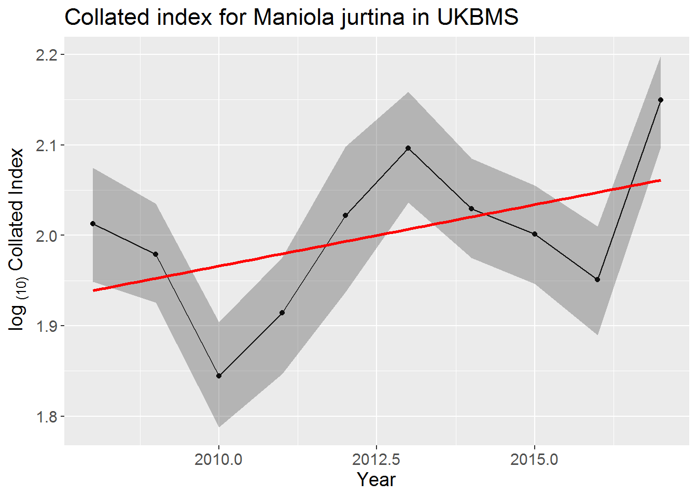

Source trend functions required that you can download from this link.
Read in collated indices for species and BMS of interest
# Specify the species - note the underscore
spp <- "Maniola_jurtina"
# Specify the BMS
bms <- "UKBMS"
# Read in the bootstrapped collated indices
co_index <- readRDS(paste0("./bms_workshop_data/", spp, "_co_index_boot.rds"))
# Filter to a single BMS to focus upon
co_index <- co_index[BMS_ID == bms]Convert to log 10 collated indices (TRMOBS)
co_index[, LOGDENSITY:= log(COL_INDEX)/log(10)][, TRMOBS := LOGDENSITY - mean(LOGDENSITY) + 2, by = .(BOOTi)]Estimate and classify species trends with a confidence interval based on the bootstraps
## data_from data_to data_nyears minyear maxyear n nboot_lt rate_lt rate_lt_low
## 0 2008 2017 10 2008 2017 10 500 1.03176 1.018995
## rate_lt_upp pcn_lt TrendClass_lt
## 0 1.044679 32.49766 Moderate increasePlot the species log collated index with bootstrapped 95% confidence interval and linear trend line (in red)
# Calculate mean log index for original data
co_index0_mean <- mean(co_index[BOOTi == 0]$LOGDENSITY)
# Derive interval from quantiles
co_index_ci <- merge(co_index[BOOTi == 0, .(M_YEAR, TRMOBS, BMS_ID)],
co_index[BOOTi != 0, .(LOWER = quantile(LOGDENSITY - co_index0_mean + 2, 0.025),
UPPER = quantile(LOGDENSITY - co_index0_mean + 2, 0.975)), by = .(BMS_ID, M_YEAR)],
by=c("BMS_ID","M_YEAR"))
ggplot(co_index_ci, aes(M_YEAR, TRMOBS))+
theme(text = element_text(size = 14))+
geom_line()+
geom_point()+
geom_ribbon(aes(ymin = LOWER, ymax = UPPER), alpha = .3)+
geom_smooth(method="lm", se=FALSE, color="red")+
xlab("Year")+ylab(expression('log '['(10)']*' Collated Index'))+
ggtitle(paste("Collated index for", gsub("_", " ", spp), "in", bms))